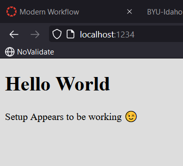
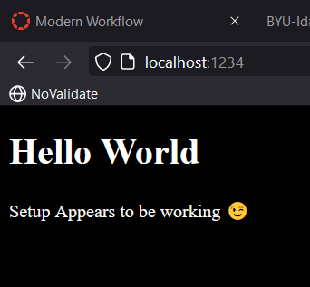

The Browser Object Model (or BOM for short) is a collection of properties and methods that contain
information about the browser and computer screen.
Pop up windows can be created with the BOM but don't do that because you're not a jerk.
Every browser window, tab, popup, frame, and iframe has a window object.
BOM and a window object only really exist in a browser situation, so if you're working in something else
like Node, instead of window it'd be a global object
If you don’t know the name of the global object, you can also refer to it using the keyword this in the
global scope.
In general, you should refer to global variables without using the window object; it’s less typing and your
code will be more portable between environments.
The window.confirm() method will stop the execution of the program and display a confirmation dialog that
shows the message provided as an argument, and giving the options of OK or Cancel. It returns the boolean
values of true if the user clicks OK, and false if the user clicks Cancel.
Similar window functions are alert and prompt, but the passing of the true/false in confirm was notable. And
these functions all stop the program while it waits for input.
The window object has a navigator property that returns a reference to the Navigator object. The Navigator
object contains information about the browser being used.
window.location.href returns the URL as a full string. You can use this to assign a redirect.
The window.history property can be used to access information about any previously visited pages in the
current browser session.
window.open() basically creates a popup, so unless we have REALLY good reason, we're not going to do that.
The window.screen object contains information about the screen the browser is displayed on. You can find out
the height and width of the screen in pixels using the height and width properties respectively. Good to
know for reference while doing CSS.
The Screen object has more uses for mobile devices. It also allows you to do things like turn off the
device’s screen, detect a change in its orientation or lock it in a specific orientation.
The use of document.write() is heavily frowned upon as it can only be realistically used by mixing
JavaScript within an HTML document.
To create a cookie use the document.cookie property. Cookies are set locally.
Cookies can be made persistent ― that is, lasting beyond the browser session ― by adding "; expires=date" to
the end of the cookie when it’s set, otherwise they delete at the end of the session. An alternative is to
set the max-age value.
To remove a cookie, you need to set it to expire at a time in the past.
The setTimeOut() and setInterval() methods can be used to animate elements on a web page. But typically you
want to use CSS for this kind of thing.
Chapter 14
The data- attribute is a way of embedding data in a web page using custom attributes that are ignored by the
browser. They’re also private to a page, so are not intended to be used by an external service – their sole
purpose is to be used by a JavaScript program.
data-powers accessed as dataset.powers.
Due to the ever-changing nature of most APIs, it’s still best practice to use feature detection before using
any of the API methods.
The Web Storage API provides a key-value store on the client’s computer that is similar to using cookies but
has fewer restrictions, more storage capacity, and is generally easier to use. This is how we use
localStorage.
localStorage.setItem('name', 'Walter White'); \\ localStorage.getItem('name'); << Walter White
localStorage.removeItem('name'); OR delete localStorage.name;
localStorage.clear(); removes everything in the localStorage
The Geolocation API is used to obtain the geographical position of the device. getCurrentPosition()
Web workers allow processes to be run in the background, adding support for concurrency in JavaScript. The
worker will only start once the file has finished downloading completely.
Example of Web Workers in action -- You should be able to change the background
color even while 'This could take a while...' is visible while calculating the facctors for very large
numbers.
Modern Workflow
This went well.
Here is an image of the it up and running: 
And here is an image of the changes after a small CSS tweak: 
Team Activity
Drum Kit -- this should be functional! it is for me, anyway! Hit the keyboard
keys to play!